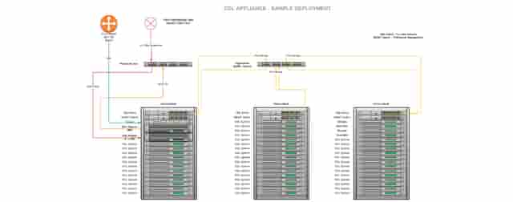
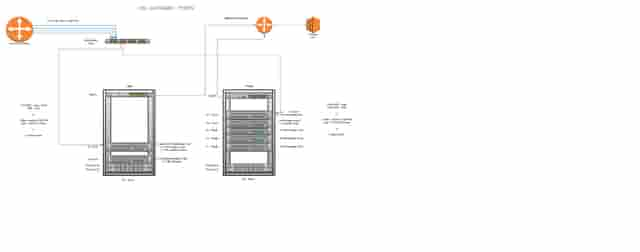
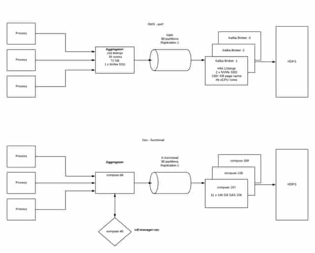
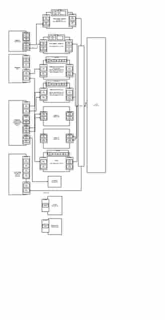
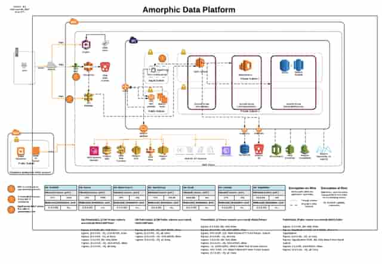

THE PROBLEM
Cyber telemetry & distributed ingestion
Security data arrived in different shapes and at different rates: raw packet capture, NetFlow, application logs and firewall events. The engineering challenge was to collect those signals, move them into distributed processing and storage, and make them useful together. A packet-capture path also has different bottlenecks from a log pipeline, so testing needed to span NICs, disks, network fabrics, brokers and analytics services.
What I owned
I helped build the cyber data platform, implemented multi-source telemetry collection, designed a three-rack capture/replay test bed, and owned deployment and performance work across the hardware and distributed-data stack.
- Implemented collection of PCAP, NetFlow, application logs and firewall events to support a correlated cyber data lake.
- Designed a three-rack test bed with packet brokers and IDS/IPS integrations; deployed and performance-tuned 40 Gb/s packet-capture technology.
- Engineered Corelight and IXIA integrations and operated Hadoop, Kafka, Spark, Solr, HBase and Elasticsearch components supporting the product.
- Built Prometheus monitoring for collector agents and automated cloud/on-premises deployment using CloudFormation, Ansible, Jenkins, GitLab, Kickstart, Puppet and Python APIs.
SYSTEM DESIGN
Follow the architecture.
- 01
Capture and replay traffic
Mirrored traffic reaches a packet broker and capture systems. A replay path feeds security tools and provides a controlled test environment. The rack topology separates data transfer from server-management networking.
- 02
Collect logs and flows
Collector and aggregator processes feed Kafka before data lands in HDFS. The supplied test-bed drawing distinguishes functional and performance environments, including different storage and broker configurations.
- 03
Process and investigate
The broader product uses distributed storage, processing and search components. My work connects the source telemetry and platform operations; the overview groups those capabilities without asserting one identical route for every data type.
- 04
Package for deployment
Gateway designs separate lightweight and larger footprints, with collector, message, storage and management roles. Cloud integration and automated builds make those roles deployable across environments.
ENGINEERING JUDGMENT
The decisions behind the boxes.
Separate functional tests from performance tests
A functionally correct collector can still be limited by disk, broker capacity or the capture path. The test environment made those dimensions visible instead of treating every failure as an application problem.
Keep capture and management paths distinct
The multi-rack design separates the data-transfer network from server-management access. Capture/replay and security integrations can be reasoned about independently from routine host operations.
Observe the collector as well as the cluster
Prometheus monitoring at the collector layer complements distributed-platform operations. This gives the team visibility before data reaches the search or analytics tier.
DELIVERY & OPERATIONS
What changed.
- Delivered a three-rack environment for packet capture/replay and security-tool integration.
- Deployed and tuned 40 Gb/s capture technology across hardware and software boundaries; this is a technology rating, not a measured sustained end-to-end ingestion result.
- Integrated multiple telemetry families and automated deployment and operational monitoring for the product's distributed stack.
The operating story
This work required following a performance symptom across system boundaries: capture hardware, network links, storage media, the aggregation process, Kafka and HDFS. The architecture set is useful for discussing how I isolate bottlenecks and make a complex platform repeatable to deploy and support.
SUPPORTING VIEWS
Go one level deeper.
Capture and replay topology
Data-transfer and management networks across a three-rack integration environment.
Log ingestion test bed
The collector → aggregator → Kafka → HDFS path, with functional and performance testing separated.
Packet-capture test environment
A generalized view of replay, capture, storage and security-sensor paths; host details removed.
Gateway deployment footprints
Lightweight and larger deployment options grouped by collector, queue, storage and management roles.
Amorphic cloud reference
Team architecture context from a later 2019 drawing; not a personal authorship claim.
ORIGINAL DIAGRAMS
A glimpse of the original diagrams.

LOW-RESOLUTION PORTFOLIO PREVIEWMulti-rack network topology
Capture, replay, security-tool integration and separate data/management networks.

LOW-RESOLUTION PORTFOLIO PREVIEWGateway deployment architecture
Original lightweight and larger gateway footprints, including component roles and design targets.

LOW-RESOLUTION PORTFOLIO PREVIEWLog collection test bed
Functional and performance environments, with collector, aggregator, Kafka and HDFS configurations.

LOW-RESOLUTION PORTFOLIO PREVIEW40G capture test environment
Capture/replay connections and hardware configurations. Link speeds and design labels are not end-to-end throughput measurements.

LOW-RESOLUTION PORTFOLIO PREVIEWAmorphic cloud architecture reference
Team-context drawing dated June 2019, with its original author credit shown. It is not evidence of my sole authorship or an extension of my stated CDL role.
LET’S GO DEEPER
Good starting points for a conversation.
- How would you isolate packet loss versus downstream backlog?
- Why did functional and performance environments differ?
- What did you monitor at the collector layer?
Scope and attribution. The walkthrough diagrams are simplified redraws; low-resolution previews of the supplied originals are available separately. Gateway capacities and test configurations are not promoted to production benchmarks. The separate Amorphic cloud reference is dated June 2019 and credits a team author; it is included only as product context, not as evidence that I personally designed that entire later architecture. Telemetry here does not mean OpenTelemetry.
Next case studyMission-critical cloud migration →